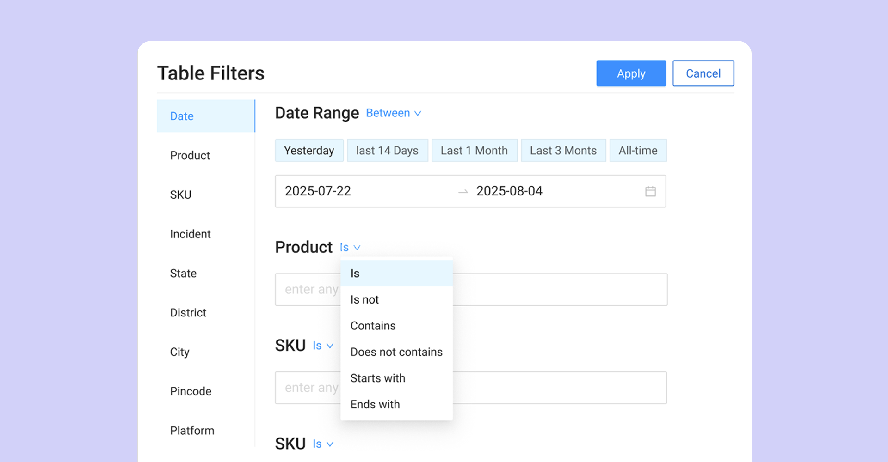

MetricsCart
Digital Shelf Analytics Platform
Responsibilities
End-to-end product UX and web experience design for a data-heavy analytics application.

Overview
MetricsCart is a digital shelf analytics platform that helps teams analyze performance, trends, and operational data across large datasets. The product is primarily used by non-technical users who need access to powerful analytics without dealing with complex query logic.
I led the complete product design effort for the quick commerce platform, translating a detailed requirements document into a clear and scalable analytics experience. My work covered UX strategy, interaction design, UI design, and delivery-ready designs for both the analytics application and the product website.
Key Challenges
The core challenge was solving the analytics paradox: delivering powerful insights without making the product hard to use.
Challenge 1: Information Density & Cognitive Load
With hundreds of SKUs and dozens of computing KPIs, the interface risked becoming an unreadable "wall of data."
Approach: I used progressive disclosure and a clear visual hierarchy to surface key insights first. Summary tiles provided a quick pulse check, while detailed data stayed available without overwhelming the interface.
Challenge 2: Efficient Bulk Data Filtering
In a quick commerce environment, users aren't managing a single SKU but hundreds of locations and thousands of products at once. At this scale, standard dropdown filters quickly break down.
Approach: I designed a multi-select filtering system that supports bulk selection through visible tags and uses natural language operators like Is, Is not, and Contains. This made complex filtering easier to understand, faster to apply, and more reliable for non-technical users.

The image above shows a mid-fidelity version of the filter design, focused on validating interaction patterns and filtering logic before final visual refinement.
Challenge 3: Balancing the needs of casual viewers and power users
MetricsCart serves two distinct needs: the quick 10-second pulse check and the multi-hour deep-dive analysis. The challenge was integrating high-level power without intimidating casual users.
Approach: I focused on contextual power by embedding advanced tools like inline table filters and drill-down tooltips directly into the data. This keeps the interface clean for quick viewing while allowing deeper exploration exactly where users expect it, without relying on complex menus.
Website & Brand Strategy
In addition to the analytics app, I redesigned the MetricsCart marketing website to support discovery and conversion.
The original site had a fragmented layout that made discovery difficult. I restructured the information architecture from a feature-led structure to a solution-focused flow aligned with user mental models.
Key improvements included:
Strategic Information Architecture: I restructured the site hierarchy from a feature-led layout to a solution-focused flow. By aligning the information architecture with users' mental models, visitors could move from data problems to relevant MetricsCart solutions with fewer steps.
Conversion-Driven UX: I redesigned the core landing pages to reduce friction in the user journey. By simplifying the path to "Book a Demo" and clarifying the value proposition through clearer visual storytelling, I improved lead conversion and inbound quality.
Brand & Creative Oversight
As a key member of the marketing team, I acted as the bridge between product and brand, ensuring a cohesive experience across every touchpoint.
Elevating Team Output: I standardized the visual language across all marketing assets, significantly raising the creative bar and ensuring a more professional, premium brand aesthetic.
Overall Impact
Market-Ready Vision
Translated complex technical requirements into a polished, interactive product that defines the platform's market position.
Strategic IA & Conversion
Redesigned the website's information Architecture (IA) to focus on user solutions, leading to higher-quality inbound leads and improved conversion rates.
Unified Brand Trust
Established a "trust loop" by ensuring a seamless visual experience from the marketing website through to the deep-product analytics.
More Work

ScrapeHero
Data as a Service Ecosystem
Led a complete UX and UI revamp of ScrapeHero’s marketing website, marketplace, and data store, including design and development.